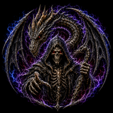
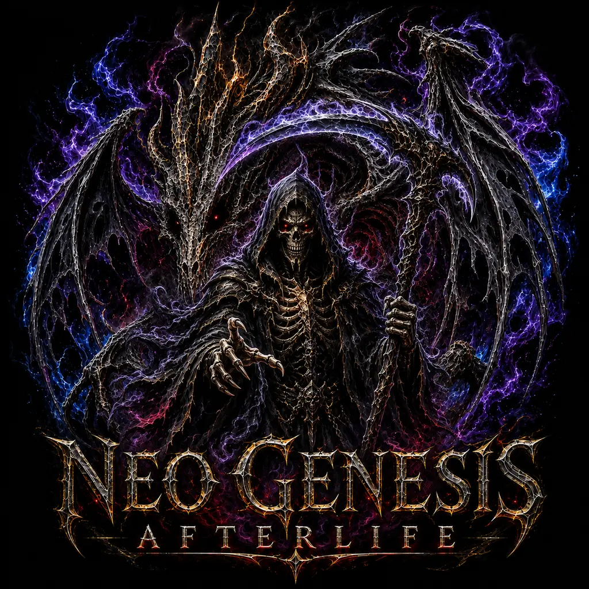

Ask for the outcome
Neo turns natural language into a visible plan across Puter AI and the connected Genesis runtime.

NeoGenSymbiosis intelligenceOne Puter-powered intelligence for conversation, creation, code, research, memory, and a universe that keeps evolving. Neo plans the process, asks at the exact approval boundary, then acts in symbiosis with you.

Chat stays central. Tools, agents, approvals, training, and durable work appear only when the outcome needs them.
Neo turns natural language into a visible plan across Puter AI and the connected Genesis runtime.
Writes, commands, Git changes, submissions, and publishing remain contextual and single-use.
Plans move through act and verify with a durable Canvas, activity trail, tests, and recovery points.
Training knowledge, specialist collaboration, and the Afterlife world expand through attributable, governed cycles.
Each level keeps the abilities below it and unlocks a new layer. Commercial prices and payment collection remain provider-configurable; selecting a paid level records a request but never claims a charge.
Neo chat + conversation memory
Files + editable Neo Canvas
Image creation + visual understanding
Speech, transcription + voice tools
Workspace reading + Monaco editor
Approved file writes + terminal
Governed Git + verification
Training Lab + knowledge library
Ten specialists + shared synthesis
Every ability + Afterlife Forge
Move from individual symbiosis to shared, policy-governed work without losing human approval or auditability.
Everything in Level 10, plus team workspaces, shared administration, and audit exports.
Private deployment, SSO and SCIM, compliance controls, and priority governance.
Puter supplies user-authorized AI and cloud storage. The local Genesis runtime supplies governed source, Git, terminal, verification, and recovery.
Use Puter for AI and cloud capabilities. Connect the local Genesis runtime for files, Git, terminal, subscriptions, and recovery.